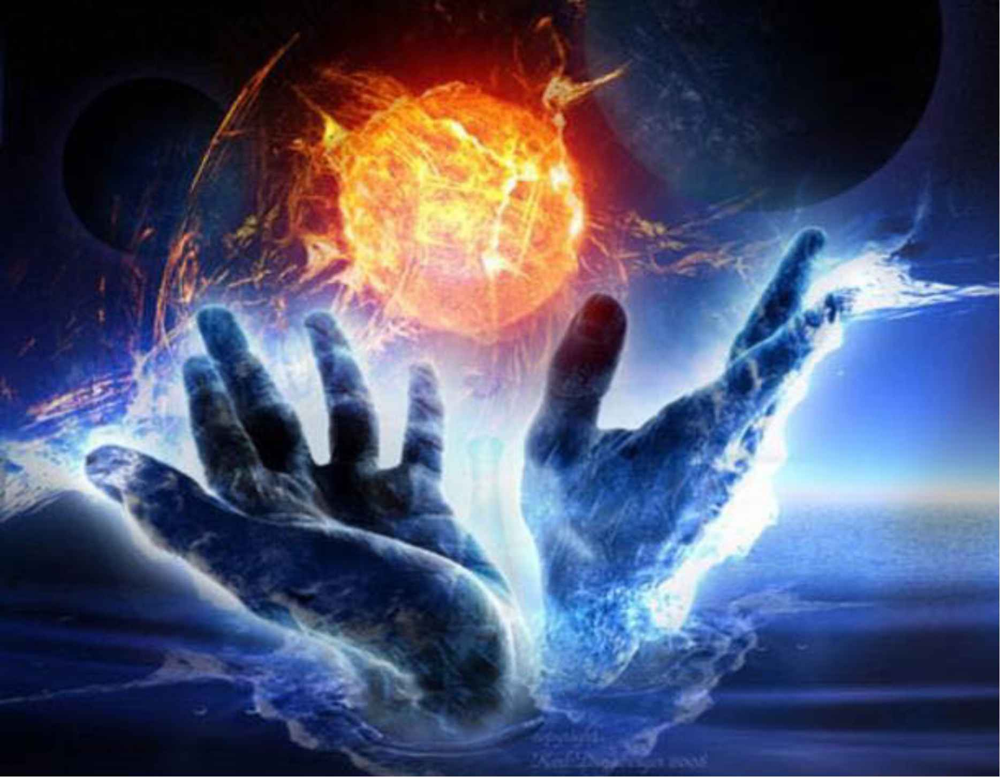
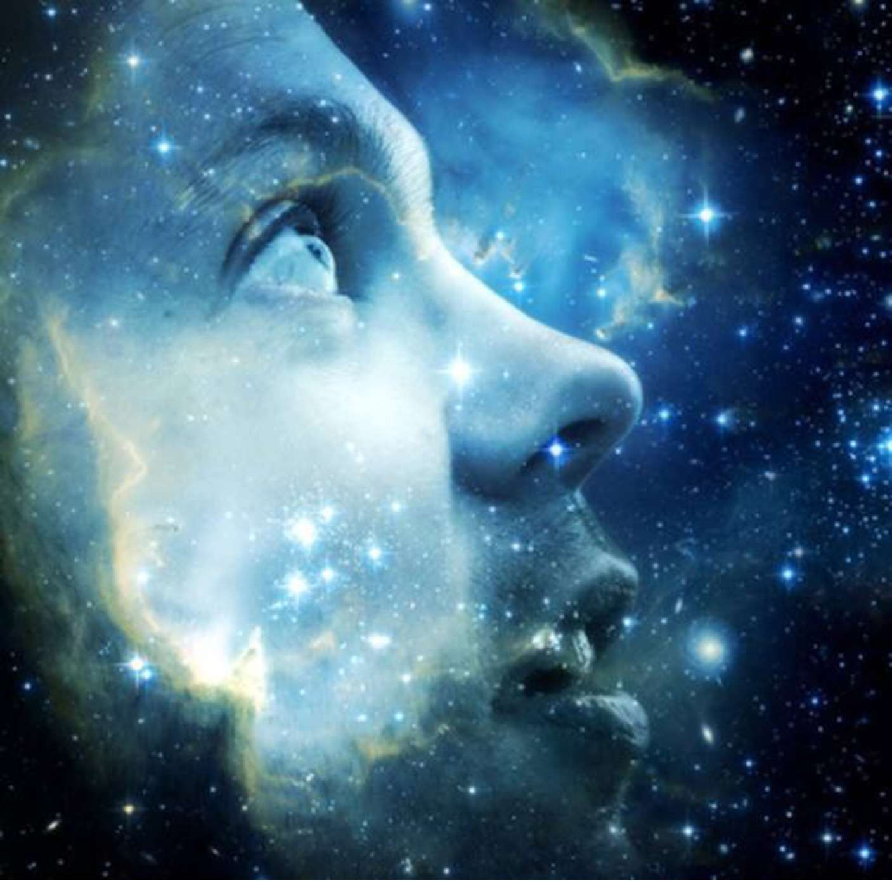

| あなたがパラレル宇宙で真の創造主となるための実践方法: 凡ゆる存在が、神であり、全てであり、一つであり、集合意識であり、創造主である。 (アセンション、ライトワーカー、スピリチュアル、実践書) | |
| 創造主 爆炎のヒロ | |
| (2019) | |

パラレル宇宙で真の創造主となるための実践方法
凡ゆる存在が、神であり、全てであり、一つであり、集合意識であり、創造主である
何らかの状況が差し迫った時に己の身や精神を守ろうとする発想における自己保身的抑止力という概念によって、逆に自分が他者の存在を肉体面や精神面において傷つけてしまうといった行為や思考それ自体が、人間の自我なのです。その自我の性質こそが現実において負の連鎖を生み出し争いを蔓延させます 。
争って殺してしまう自我こそが原因で、その自我の性質を是正する為に宇宙外の絶対なる存在者達が、この二元性である光と闇の宇宙空間へと生命を落としました。そして、最後には皆の意識が一つに纏まって全我へと至る様に、私という真我意識が創造主となる道を歩む程で物語が進行する人生シナリオです 。
ずーっと人間は永遠に永遠に繰り返す自我と自我の小競り合いによって今の社会を成り立たせてきました。人間は人類の成長の為にテクノロジーや生活環境を自らの努力で進化発展させてきたと思っていますが、抑この宇宙でその様な生産的な事を生み出していかなければ我々は生きてはいけないのでしょうか ？
宇宙外に存在する次元の世界では全てが可能で意識レベルによって環境が変化する様に生活の均衡を調整する事ができる天国システムが初めから存在していると言ったら、今私達がいるこの次元の宇宙空間で人類が肉体と精神を酷使して進化発展していこうとするのに意味はあるのか？とあなたは感じる筈です 。
そして、その意識の段階によって生活様式が地獄にも天国にもなる程の状態を創り出すシステムを現実に応用したものがここ地球という空間であると言ったら、あなたは自己の意識を最大の段階にまで高めたいですか？その究極の意識に到達する為に最も賢い道を行く手段は創造主という神職を選択する事です 。
【創造主の思考へと覚醒するには⁉️】
人類がこれから体験する天国への扉は、あなた方の意識の覚醒によって必然的に開かれます。ここ地球こそがその天国となる舞台上であり、皆が争わずに毎日好きな事をして楽しく暮せる5次元領域なる空間です。その空間へと移行する為には、あなた自身がアセンションをしていかなければ先ず成し得ません 。
他人は幻影であり、在るのは私という真我ただ一人です。故に私がこの宇宙での真なる創造主です。でもきっとあなた方はこう思います。あなたから見たら私は幻かもしれないが、私からするとあなたも幻ではないのかと。これは頭（マインド）でいくら議論し合っても永遠に答えの出ない問題となるでしょう 。
しかし、マインドではなくあなたのハートは何と言っているのか？私だって創造主になりたいと言うでしょう。それで良いのです。誰が本当の創造主なのかではなく、皆で創造主の思考になっていけばいいだけの事です。それが真のワンネスになるという神我です。では、どうしたら創造主の思考になれるのか ？
ここでは、私がこの宇宙の真の創造主なんだと思い出すに至った方法を伝えます。これは私が初めて自動書記をして覚醒の段階に入った時からそれを悟る迄に何をしてきたのかを教えるだけなので、単なるノウハウと勘違いしないで下さい。ノウハウはマインドの領域になるのでテクニックになってしまいます 。
創造主はテクニックをマスターすれば成れる職業ではありません。大事なのはあなたが心のままに動ける様になることなのです。創造主とは全てから解き放たれた存在です。でも行き成り創造主になろうと思って動こうにも果てしが無くて絶対に躓きます。なので今回私の成功法を具体的に伝えることにします 。
創造主であることを本気で心から自覚するために、先立つものはやはり豊富な知識です。と言っても今までの地球における三次元レベルでの情報は全く不要になります。寧ろ、今の地球のルールと宇宙の絶対なる真理は真逆となってしまう概念なので、今までの知識は全て手放して捨ててもらうことになります 。
それでは、始めていきましょう！

創造主の思考になるために
3年前に、知人から「引き寄せの法則」について書かれた『ザ・シークレット』という本を手渡され、その内容に非常に驚きを覚えました。早速、私は現実に何を引き寄せようかとあれこれ思案してはみたものの、具体的に夢をイメージできないし、自分の願望を言語化する創造力自体も足りないと思っていたので、それでも貧乏で精神障害者で不安だらけの現実を何とか変えたいと望んで、ノートに『35歳までに全てを手に入れる』という全く具体的ではない望みを書きまくったのです。34歳の今、実際にその現実の射程圏内にまで入ってこようと進んできています。今ではこの世に誕生したその時から、全ては私が真の創造主として歩んでいく（創造主としての自分自身を取り戻していく）シナリオは既に創られていたのだと実感します。
2018年の8月、哭声/コクソンという韓国映画を観て、人は超常的な現象を体験すると、それが神の御業なのか悪魔の仕業なのか、信念体系で発想がどちらかに二分されるという二元性に縛られた人間の思考原理を知って、それまではあまり考えてこなかった神という存在概念にも興味を抱き始めました。そして、YouTubeのハーベスト・タイム・ミニスリーズというチャンネルで、キリスト教の牧師の解説を聴いたり、聖書のアプリをインストールして音声を聴き流しました。その内、インターネットのブログなどで聖書について触れている情報を漁るようになり、自分なりに聖書を解読しようとしました。解読していく内に、私はこの世界自体がRPGゲームみたいな構造なんだと知るようになりました。そして、神が存在することを完全に受け入れた瞬間から、私は知人にLineで『神は死んではいない！』と心からそう宣言していたのです。今思うと、神や宇宙勢力や高次の存在達が現実に現れるというアセンションするパラレル宇宙のタイムライン（未来）へと私自身が移行（パラダイムシフト）したんだと実感しています。
その日の夜に初めて自動書記（神なる存在から霊感され勝手に手が動き長文を書くこと）が発動しました。自動書記の全文については、別にて販売しています。自動書記の内容は、この宇宙内からではなく、宇宙外の存在者からのメッセージだと思うので、「絶対なる真理を知りたくて、この光と闇の二元性の葛藤から解放されたい」と思う方なら、是非買って下さい。500円で善悪の概念の呪縛から解き放たれるのならば安いです。
話を戻します^ ^
初めて自動書記をした次の日の夜中の寝ていた時に、突然自分の内なる声に「最後の審判の降る日が来た」と告げられて、何も所持せず知らない場所に移動させられて、夜中から昼間までのほぼ12時間、坂あり谷ありの道をただひたすらに歩かされました。まるで迷宮迷路のダンジョンみたいな感じで、何処を歩いても人の敷地や道路、飲める水も、横になって休める所も無く、身体の限界を何度も迎えそうになりながら「そうかここが地獄だったんだな」と思いました。しかし、内なる声に「真理に導くまで共に歩む」と告げられ、私は神に全ての身を委ねることを決断しながら、死ぬ寸前にまで歩き続けたことによって、後になってから「今までに溜まっていた全てのカルマを清算し終えた」のだと実感することができました。この神聖なるミニイベントが、私にとっては神として覚醒する道に進むための『最初の解放を迎える日』となったのです。
その後、数日経ってからサラリーマンだった仕事を退職し、身の回りの断捨離をしました。その時に、私が貰い受けた創価学会の本尊の札と仏壇をゴミに出したことによって、母親に死ぬほど勘当されたのですが、私は「神の国に永久就職して神にのみ仕える身となったから人や会社のためにはもう働けない」と会社にも身内にもその時は本気で信じて言ったのでした。
これにより、あっさりと引きこもり生活がスタートして自由な時間を目一杯確保することができました。これから、あなたが創造主として目覚めたいのならば、嫌な仕事はきっぱりと辞めて下さい。貯金が無いという人は簡単なバイトやネットなどで副業するなどをしましょう。というか、これから目覚めて創造主になると決めた人は、嫌だと思うことを一切しないようにして下さい。嫌なことを嫌だと思って行動していたら当たり前ですが創造主にはなれません。何故なら、神はしなければならないという思いでは動かず、したいからするという思いで動くからです。勿論、今している仕事が好きであるならば、それは続けていても構いません。でも、今後覚醒したあなたなら〝お金さん〟を好きなだけ引き寄せる事ができるようになるので、今は何も心配してはいけません。不安や恐怖という概念が如何に幻想であるのかということも、あなたが目覚めれば自然と体感できるようになります。どの道、数年後には地球規模での壮大なイベントが起きて、銀行・ATMが一時的に遮断し、金融がリセットされます。今まで庶民から搾取することしか考えてこなかった人間達が一斉に摘発され、そこから通貨のシステムが大幅に改善されるので、もう実生活においてお金に困ることはなくなります。（一部の権力者や富裕層が独占していたお金の再分配やベーシックインカムの導入、光の宇宙勢力によるフリーエネルギー技術の提供等が展開されます。）
自由な時間ができた私は、一日中寝転がってただ只管にYouTube動画を見続けました。基本的にしたことはこれだけになります。本当の勉強とは、頑張って教科書を机の上で広げて読み書きすることや一生懸命になって時間を割き講習やセミナーに行くことではありません。YouTubeは、今人々が何を考えて行動しているのかがダイレクトに伝えられている媒体です。マスコミやテレビから発せられている情報とは違い、編集において第三者の操作や邪魔が入ってはいないので、YouTubeは純粋無垢なる情報源となります。勿論、自覚が無くて嘘の情報を流している人もいますが、その中には真実も混ざり合っています。あなたがすることは、そこから自分の心に従って真実のみを探り取っていくことです。注意して欲しいのは、動画を見なければならないという義務感や使命感ではなく、ただただ知識を追求したいという探究心と好奇心で見て下さい。動画を見るのがストレスになっていては元も子もありませんから。無論、このやり方に疑問を持ち、私は違う道を行くべきだと判断するのであれば、そちらに行くことをおすすめします。ですが、一度目覚めの選択をしたあなたならば、もう後戻りはできません。何らかの超能力が身に付くのは時間の問題となるでしょう。超能力は、テレパシー、チャネリング、テレポーテーション、物質化、ヒーリングなど、様々です。攻撃的な超能力を期待することはオススメしませんが、何の能力を思い出すのかは未知数です。YouTubeを見ればわかりますが、チャネラーやヒーラーは実際現実に沢山現れています。因みに私はYouTubeを一日中観てても全く飽きないです。ただ、皆さんも合間合間にブレイクタイムは入れて下さいね！お笑いや音楽、くだらない動画を見てリラックスすることも大切です。
それでは、実際に私がどんなYouTube動画を見てきたのかをオススメしたい範囲内で記載します。今、あなたの頭の中にはどうでも良いアプリが沢山インストールされています。だから、YouTubeを開いても、それに付随した関連動画しか現実に現れては来ないのです。なので、先ずは私のオススメする動画などに触れながら創造主の思考になるための土台作りに励みましょう！その内にどんな情報も受け入れられるというオープンマインドになっていければ、それがあなたの現実に創造主を自覚するための必要な情報が形となってあなたの前に現れてきます。というか、情報が現れたのではなく、あなたがその情報をあなたにとって必要な答えとして現すためにあなたが現実にイメージを具現化したのです。それが創造主である能力の一部です。
※重要‼️
（この書籍は、私がこれから紹介に上げるYouTube動画を元にして、あなたが気づきを得られながら目覚めの段階を確実に踏み、思考・意識を徐々に開拓していくことが一番の目的で書いています。いきなり覚醒が起こるわけではありません。これは、YouTube動画を時間の許す限り沢山見ることで、あなたとしては体感的にゆっくりでも、現実の時間にすると一番速くて確実に目覚めていく方法です。これは、思考・意識の変容を重点にするためのワークと言っても良いでしょう。感覚・体験においての変化はあまり起こらないでしょう。ですが、まず先に思考・意識を変容させなければ、次に起こってくる感覚・体験も豊かで実りあるものとはなっていかないのだとあなたの心は既に知っています。ここで私が伝えたいのは、ただ只管にYouTubeを見てくださいということです。）
創造主への覚醒初級編
○引き寄せの法則で【いつ迄に全てを手に入れる】とノートに書く。（細かく詳細に書く必要はなし！）
○聖書に触れる（聖書アプリでOK）
○キリストや神、天使、悪霊、それらに付随した関連動画をYouTubeで見る。
★YouTubeオススメチャンネル★↓
【ハーベスト・タイム・ミニストリーズHarvest Time Ministries】
https://m.youtube.com/user/HarvestTimeMin
【Eden Media】
https://m.youtube.com/channel/UC-eQC7XwFpCy-2fFtw-NtIg
【リーハイバレー・ジャパニーズ・ミニストリーズ】
https://m.youtube.com/channel/UC1DwW7Il7-7JEiZHvRBa6lA
【whitepurplish】
https://m.youtube.com/user/whitepurplish
【The Last Reformation】
https://m.youtube.com/user/DanishEvangelist
【Todd White - Lifestyle Christianity】
https://m.youtube.com/user/ToddWhiteChannel
【Nicolaus Copernicus】
https://m.youtube.com/user/chlorohead
【ワンダー太塚】
https://m.youtube.com/channel/UC17F_2PziMdtCzRb_CT3rIg
⚫ ︎この時点で私が行動に移したのは、外国へキリストの洗礼を受けに行ったことです。
〜ドイツのThe Last Reformation
代表のトーベン・ゾンダーガード氏から水の聖霊によるバプテスマとその弟子達によるジーザスネームによって悪霊追い出しを受ける。哀しみの霊が抜ける感覚を味わった。
〜オーストラリアのAwakeningイベント
Lifestyle Christianityの主催者トッド・ホワイト氏からジーザスを呼び出して、その神子の霊的な炎による魂のバプテスマを受ける。身体の内側のハートが数分間ブルルルンッと高バイブレーションする感覚を体験した。
▲因みに日本のキリスト教会での洗礼はあまりオススメしません。何故なら、聖書だけに依存している人達が多いので、ハートの感覚よりもマインド思考に偏ってしまっていますし、聖書に書かれたこと以外の発想をする人達を異端者扱いとしてしまいます。それは真の愛を体現できていないし、神の三位一体（御父＋御子＋聖霊）である聖霊が本当に内に宿っているのかも疑問です。彼らは神に謙っていれば天国に行けると思っていますが、残念ながら私がもし神だとしたら、そんな人間には何の魅力も感じずお近付きになりたいとは思いませんね。神だって感情や意識や意志があり皆さんと性格は一緒です。従って、そういう所では洗礼を受けても意味がないかもしれません。キリスト教に限らず他の如何なる宗教も同様です。洗礼を受けるべきかどうかはあなた自身で決めましょう。あなたの内なる心や高次の存在の導きのままに従って下さい。
創造主への覚醒中級編
○アセンション関連、スピリチュアル関連の動画を見る。検索キーワード厳選例）バシャール、アシュタール、ライトワーカー、チャクラ、並木良和
★オススメYouTube★↓
【wake up88】
https://m.youtube.com/channel/UCSqscGUWyUvXf3kl44CzDZA
【Channelフリーメイソン】
https://m.youtube.com/channel/UCeqmgb-Rgu5AZof_wS0sWOQ
【ミナミAアシュタール】
https://m.youtube.com/channel/UCY8lDHJqxoyt06VjUXhk4QQ
【バシャール ism】
https://m.youtube.com/channel/UCdjqc7tso8LmTnsF2Vwm4Ng
【Michael Pendragon】
https://m.youtube.com/channel/UCemuthaHvfEV7mjQ8jTH5OQ
【K.Angel Divine Angel Place】
https://m.youtube.com/user/kyonshii3/featured
【Butterfly Effect 地に足のついた スピリチュアル】
https://m.youtube.com/channel/UCnCnujO_SO6OyhjZjcZca4w
【さとりこ】
https://m.youtube.com/channel/UC-g3J-t1vt4TmdAogDbkDoQ
【曽我朋代】
https://m.youtube.com/channel/UC_bYKWl0qN5bpPk2jo5x-Pw
【ワンネススピリチュアルチャンネル】
https://m.youtube.com/channel/UCGAIqZ8k3B8AviHkomNZ3aw
【MOMOYO channel】
https://m.youtube.com/channel/UCit4Iu0EPk4fP0P_gZio5Zg
【akikoSpiritual】
https://m.youtube.com/channel/UCYROCQIHAjoNPGQEU9O01nA
【peesuke 3】
https://m.youtube.com/channel/UCc8U7Ub_y6ws2Dw8wX3Za0A
【mami】
https://m.youtube.com/channel/UCzq3wgfK1vgOzYKgj2ZHOLA
【ライトランゲージ＊あまねりか「ほしのおと」】
https://m.youtube.com/channel/UCZ40_JESAK9z679YEtTW2WA
【めぐり研究所】
https://m.youtube.com/channel/UC8tUp51AFm-S2gkTuEKsiuQ
【ジローヤンタラ】
https://m.youtube.com/user/yantarajapan
その他（心理学・自己啓発）
【メンタリスト DaiGo】
https://m.youtube.com/user/mentalistdaigo
この時期私は直感に従い、五体の九頭龍神に「次元上昇します！私の魂に宿って下さい！」とお願いしに神社へ挨拶回りに行きました。
♾ 戸隠神社火之御子社（湧き上がる無限の生命力を司る）
♾ 九頭龍権現水神社（溢れ出す偉大なる知性の表現を司る）
♾ 箱根九頭龍神社 新宮（純真無垢な博愛精神の心を司る）
♾ 檜原村九頭龍神社（幻実世界における変化飛躍の上昇を司る）
♾ 印西の九頭龍神社（強大化し得る闇を受容する精神を司る）
LET'S アセンション（次元上昇）！！
◎アセンションするためには、凡ゆる概念を手放して身軽になっていく必要があります。一旦受け入れて手放すと新たな答えがやってくるという繰り返しになります。手放すとは、それにフォーカスしない、執着しない、考えることをしないということです。
◎善悪の概念を手放す
（良悪・否定）、（闘争・戦争）、（努力・苦労）、（貧困・飢餓）、（事故・災害）、（不安・恐怖）、（理論・論理）
最初は善悪の概念を手放しましょう！この概念が消えされば何事に対しても争いの精神が無くなります。たまに状況によってはムッとくることはあるかもしれませんが、一旦受け入れて「そうなんだ」「そうなの？」「へー」とサラッと返せるようになります。無関心ではなく、無関係でいられるので、あなたの周りでネガティブな出来事を見かけたとしても、それがあなたの現実に実際に引き寄せられてきて、同じ体験のスクリーンを一緒になって観てしまうことはなくなります。
◎所有の概念を手放す
（彼氏・彼女）、（結婚・妻夫）、（不倫、独占）（権利・土地）
本来あなたは誰のものでもありません。あなたはあなたのもので同時にみんなのものです。地球も自然も生命も土地も誰かの所有物ではないのです。所有の概念を手放せば、結婚をしてその人だけの夫や奥さんになる必要もないと判断するようになり、不倫や独占といった概念も無くなります。いつもときめいていて色々な人と幅広くお付き合いができる思考になれるでしょう。
◎階級の概念を手放す
（教祖・信徒）、（上司・部下）、（先生・生徒）、（大人・子供）
神だろうと教祖だろうと上司だろうと、凡ゆる存在に対し、本来は上下の関係なんてありません。故に謙ったり畏まったりして、相手に謙遜する必要はないのです。階級の概念を手放せば、あなたはあなた本来の個性を惜しみ無く発揮することができるようになります。
◎崇拝の概念を手放す
（神様・悪魔）、（芸能・俳優）
何かを崇拝することによって、あなたはあなたの価値を自分で下げていることになります。神、教祖、アイドル等を崇拝しないで下さい。崇拝は階級の概念を生み、階級はピラミッド社会を形成するのです。ピラミッド社会は搾取されるだけの構造です。あなたがどんなに金持ちでも、どんなに成功していても、制限のある自由の中で、搾取され続けていることに気付いて下さい。それは、お金かもしれませんし、時間かもしれませんし、人間関係かもしれません。常にエネルギーの奪い合いの社会です！故に何かを崇拝することは即刻止めましょう！
◎罪悪の概念を手放す
（不幸・犯罪）、（嫉妬・復讐）
罪悪感なんてものは、人間が勝手に生み出して、勝手に罪の意識に囚われ、勝手に自分でカルマを背負い込んでいるだけです。神は最初から人間に自由意志を与え（本当は自由意志があるように見せているだけなんですがそれについては別の機会で触れましょう）、「何をしたって構わないし裁きはしない」と言うでしょう。自由に好きなことをして下さい！
......おっと！？「人を殺したって構わないのか？」という質問はナンセンスですよ。あなたが本当にしたいことは人を殺めることなんですか？私じゃなくても他の誰かがやったらどうするんだと思いますか？いいえ、他人のことは全くあなたには関係がありません。他人のすることは他人の自由ですし、ただ俯瞰して見ていればあなたに害は及びません。同じ現実を生きている様で実は他人は他人のつくり出す異なる宇宙の中にそれぞれが存在しているのです。あなたもあなたが創り出している宇宙という風船の中であなた自身が楽しく遊ぶことだけに集中していれば良いんです。
◎時間の概念を手放す
（年齢・病気）
例えば、あなたが年寄りに「もうお爺ちゃんなんだから、お酒ばっかり飲んでいたら高血圧になって倒れるわよ！？」と言ったとします。『お爺ちゃんだから』は年齢の概念を、『高血圧になって倒れる』は病気の概念を、それらをあなた自身が作り出してあなた自身に引き寄せてしまっているのです。時間の概念を手放せば、歳に悩まされることも病気で苦しむこともなく、ただあるべき姿に日々変容（トランスフォーム）しているのだと認識するようになります。
◎経済の概念を手放す
（政治・貨幣）、（進化、発展）
政治は最も不要な概念です。政治家やリーダーなどの纏め役はいらないのです。庶民が思い思いに好きで楽しいことを心のままにしていれば、一人一人の個の光が強く輝きそれがそのまま真の平和活動へと繋がっていくんです。なので、選挙に参加しなくても庶民は全く痛手を負いません。困るのは権力者やトップ層と言われる人達だけです。庶民が政治に興味を示さなくなれば、新たな信念体系を作り出す他ならなくなり、その新システムは今よりも更に良いシステムとなっていきます。『何だかんだで新システムの構築はより良いものとなっていく』というこの事実は歴史が証明しています。
◎分離の概念を手放す
（自分・他人）、（比較・優劣）、（家族・孤独）
ずーっと私達は分離することが真実だと思って生活していますが、それはいよいよ終わりを迎えていきます。これからは、みんなの意識が統合していく時代の大転換期に差し掛かっています。『私はあなたであり、あなたは私である』というワンネスの在り方に目覚めていきます。家族は血縁関係に縛られていましたが、地縁関係で結ばれて箱庭みたいなコミュニティの単位で暮らしていきます。家に鍵を掛けることもしなくなり、常に何かの不安に怯えて過ごさなくなります。子供は誰かが育てるという訳でもなく皆が親であり、そこで伸び伸びと育っていくことができます。
◎死別の概念を手放す
死は別次元に変化上昇するための最も楽しみなイベントであり祝福されるべき出来事です。身内と死に別れることは、残された者がその時点から現実で変化飛躍して生きるためにと、上でお互いに約束を交わしてきたからです。人間は必ず死ぬ時が来るのではなく、完璧なタイミングで死ぬ時期をも選ぶことが出来るのです。なので、悲しみに明け暮れたり、被害者意識を持つような死神思考はいい加減手放してあなた自身を解放してあげて下さい。死神思考だからこそ身内に突然の不幸がやってきて、自分が「私は無念で仕方がない」と認識してしまっているのですから。
この世の出来事は思考が先にあって、現実が後に起こるのだから当然です。
◆アセンションするために読む必要のある本はこの二冊！↓
❶日本列島から日本人が消える日
※感想
『真実の歴史』、『時間は直線ではない』ことを知り、自分が今まで体験してきたことは究極たる平和のタイムラインへと移動するためだったのだと気付き、ここで全ての過去が繋がった。
❷宇宙から"ホワイトマジック"を受け取る方法
※感想
光の勢力である宇宙存在のサナトクマラとミドリさんから第2面の現実（望む現実を容易く手に入れられるステージ）へと行くためのホワイトマジックを受け取る。この本を読んでいてミドリさんを知った直後に同棲している彼女が突然ゼリーを作って私にくれて、そのゼリーがミドリ色をしていたので、思わず「ミドリさんだ！」と思ってびっくりした（笑）
創造主への覚醒上級編
●【愛一元・非二元】、【宇宙はない・全ては無】、【我故に創造主・他人は存在しない】ことを知る。
動画検索キーワード＝ノンデュアリティ、観術、津留晃一など
★おすすめYouTubeチャンネル★↓
【jun asahi】
https://m.youtube.com/channel/UCA46ID7jlqk9CeLDYVXGl6Q
【hayamimi iruka1】
https://m.youtube.com/channel/UC80kKTL_dNjXjX-NVIL8kzQ
【Kanjutsu TV】
https://m.youtube.com/channel/UC57_bqiBqkqA7nTndw1zmLA/featured
【ノンデュアリティセッション】
https://m.youtube.com/channel/UCnf51N55eRzgP3sHfcThwWw
【大和田菜穂】
https://m.youtube.com/channel/UC9lzeApMVDxsQovqjfiA50w/featured
【KinjiNewStyle】
https://m.youtube.com/channel/UCWxLIkd4GTq35loPPBwdmZA
自分が疑問を抱いたことや答えを知りたいと思ったことは、後日になってYouTube動画を見ていて必ず答えを知り得ることができるので、ある時に『もしかしたら自分よりも先に答えを知っている存在達が過去からいたのではなく、自分が現実を創り出していて想像したことが現象となって泡のように湧いて現れているのではないか』ということに気付き、これが自分の超能力だということを知りました。そして、みなさんにもその能力が初めから備わっているのです。大事なのは、自分の心に何らかの制限やフィルターを掛けてしまうと、その部分だけが現実に答えとなってあなたの前に現れては来ないということです。もしくは現れていても認識できずにスルーしてしまっているのです。ですので、先ず自分の存在する場所に全ては完璧に有るのだということを悟りましょう。そして、全てを受け入れるからこそ、この能力は最大限に発揮されることが可能となるのです。
※またおすすめの動画チャンネルが新たに出てきたら随時載せていきますね☆
★最後に★
引きこもってYouTubeを見ながら、ずっとラインやメールやブログで自分の持っている情報を発信していたのですが、そうしている内に〝他人に言ったことや自分が思ったことは必ず自分の現実に反響してそれが現象となって帰ってくる〟という鏡の法則ならぬ、【自分の法則】があるということに気付きました。だったら、〝私がこの宇宙の真なる創造主だ〟ということを本気で信じてみんなに公言してしまえば、それは現実となっていくというシンプルな理屈です。ただそれだけであり、他人に「人が神になろうなどと冒涜だとか、厨二病だとか」言われようが、創造主になることに対して良いも悪いもないのです。生きとし生けるものの存在に全く上下関係はありません。だから、創造主が偉い訳でもなく、凄たらしさがある訳でもなく、例え、低次元の地球にひょっこりと生活していたとしても、全く不思議なことではないのです。寧ろ、神もまた地球人と一緒になって地獄から天国までを体験し、あなた方と苦楽を共にしてこの現実というホログラム体験を楽しんでいるのです。だからこそ、今私はこの時代の瞬間にフォーカスして、この次元の惑星に生きているのだと思っています。宇宙に在るのは今この瞬間だけなんです。過去も未来も脳が作り出した幻想です。歴史や過去はあなたがそう認識して記憶した情報でしかありません。もしかしたら、あなたのその記憶はあなたが実際に体験してきたことではないのかもしれません。ですが、全ては初めから繋がっています。分離意識下の自我から認識する宇宙にはそれぞれの真の創造主が眠っていて、覚醒の段階に入った時にその自我は創造主としての道を歩み始める様に初めから宇宙は愛と光の流れのシナリオに設定されています。そして、幻影である他人が何らかの方法によって真の創造主の影響の手で覚醒の段階へと導かれ、その幻影が「私は創造主だ」と受け入れる現象が起こった時には、既に幻影もパラダイムシフトを起こしていて、パラレルワールド（別の並行世界）の宇宙で真の創造主としての道を歩む次元へとその幻影自身が自ら移動している現象が起こっているのです。だから、その瞬間においては周りの景色や状況には何ら変化が起こっていない様に見えますが、あなた自身はしっかりとアセンションする次元へと移動しているので安心して下さい。つまり要約すると、あなたは幻影であり、確かな存在でもあり、全てであり、一つであり、神であり、集合意識であり、創造主です。それが真のワンネス思考なる答えです。なので、あなたには計り知れない価値があり絶対に尊い存在なのです。あなた方という存在に尊敬と感謝の念を送らせて頂きます。アーメン
さあ、創造主の道へと歩みを開始して下さい！！！好奇心を持って凡ゆるジャンルのYouTubeを見まくりましょう（笑）そして、自信がつけばあなたがあなたの統合コミュニティを形成する時です。目覚めれば簡単なことなので大丈夫ですよ^ ^リーダーになる必要はありませんから。ただきっかけをつくっていくという感覚で良いのです。そして、目覚めた人達の統合コミュニティが増えていくことによって地球での天国はいよいよ完成されていきます。それは、あなたが生きている内に十分起こり得ることです。そのために今、あなたはこの地球にフォーカスして存在しているのですから。この時から、この瞬間瞬間を目覚めていくことのために時間を使っていくという選択をしていきましょう！
最後まで読んでくれてありがとう☆
創造主 爆炎のヒロ